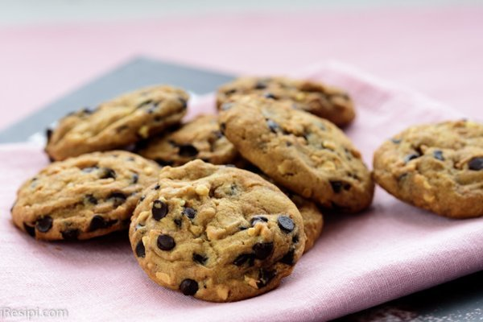

Buat cookie siaw.
moh ler masak nyer


Bahan Utama
- Biskut RayaCip coklat
- 1 cawan mentega (227g)
- 1 cawan gula castor
- 1 cawan brown sugar
- 2 biji telur
- 2 sudu teh esen vanila
- 3 cawan tepung (plain flour)
- 1 1/4 sudu teh baking soda
- 1/2 sudu teh garam (jika guna unsalted butter)
- 2 cawan semi sweet chocolate chips
- 1 cawan badam cincang, bakar seketika
Penyediaan Utama
- Step 1
Panaskan oven ke suhu 170C.Resepi biskutKelas memasak
- Step 2
Pukul mentega, gula kastor dan gula perang sehingga sedikit kembang dan sebati. Kemudian masukkan telur sebiji demi sebiji dan esen vanila.
- Masukkan tepung, baking soda dan garam (3 bahan tersebut diayak bersama terlebih dahulu), diikuti badam cincang dan chocolate chips. Kacau sebati.
- Gunakan ais krim scoop (ataupun sudu), kaupkan dan susun di atas baking tray yang dilapik dengan kertas parchment (baking paper) dalam jarak yg sesuai kerana biskut akan mengembang semasa dibakar.
- Bakar selama 10-15 minit atau sehingga biskut menjadi keperangan.